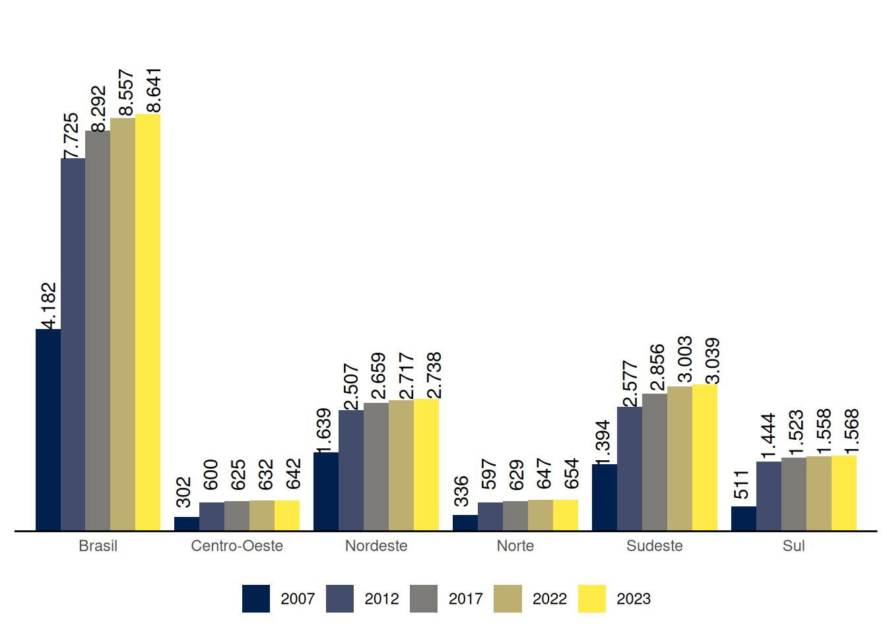
3 Unidades do SUAS
Este capítulo apresenta informações sobre as unidades físicas do SUAS e sua evolução ao longo do tempo, contemplando as seguintes informações: quantidade de unidades administrativas da rede socioassistencial, informações sobre acessibilidade, situação do imovél e disponibilidade de equipamentos.
3.2 Centros de Convivência
Os Centros de Convivência, são unidades que executam o Serviço de Convivência e Fortalecimento de Vínculos (SCFV) e compõem a Rede de Proteção Social Básica. O número total de Centros de Convivência no Brasil tem oscilado ao longo dos anos mantendo-se aproximadamente no mesmo patamar desde o início da série histórica em 2014. Em 2022 esse número tinha caído abaixo do número registrado em 2014, e em 2023 houve um acréscimo de 223 unidades, chegando em 8.060 unidades (Gráfico 3.9).
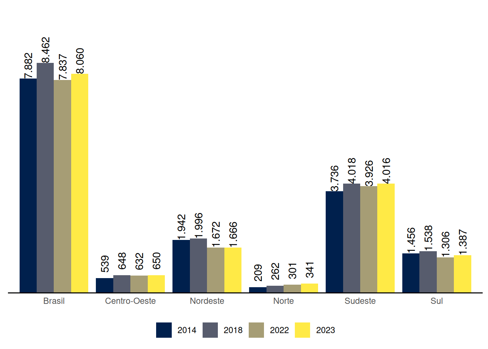
Os Centros de Convivência podem ser unidades públicas ou vinculadas a entidades de Assistência Social inscritas nos Conselhos de Assistência Social do Município ou do Distrito Federal. Em 2023, 43% dos Centros de Convivência eram governamentais e 57% das unidades eram não governamentais (Gráfico 3.10).
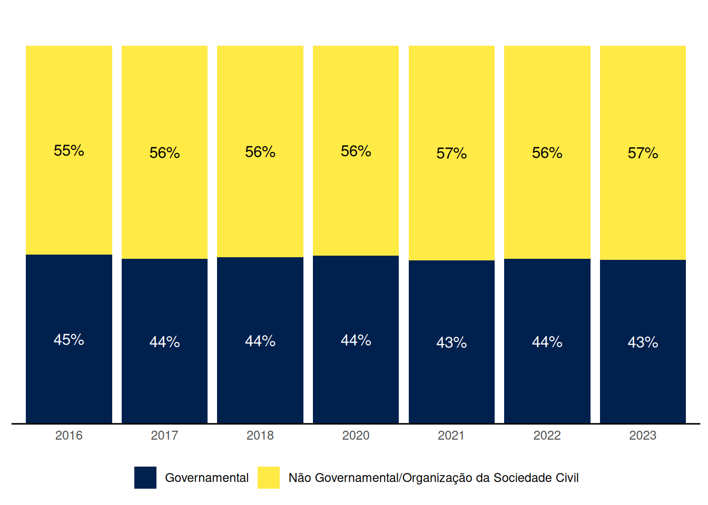
3.3 Centro de Referência Especializada de Assistência Social (CREAS)
Os Centros de Referência Especializados de Assistência Social (CREAS) são unidades públicas estatais que ofertam serviços da Proteção Social Especial às pessoas e famílias em situação de risco pessoal ou social e/ou em situação de violação de direitos.
O Censo SUAS 2023 registrou 2.902 CREAS no país: um incremento de 56 novas unidades em relação a 2022 (Gráfico 3.11).

Quando observamos o número de unidades de CREAS em cada Município segundo o porte populacional dos Municípios (Gráfico 3.12) vemos que 77% dos Municípios de Pequeno Porte I não possuem CREAS, que os Municípios de Pequeno Porte II e de Médio porte possuem 1 unidade de CREAS em 93% e 97% deles, respectivamente, assim como em 73% dos de Grande Porte. 47% das Metrópoles possuem de 4 a 6 CREAS, e 16% delas possuem apenas de 2 a 3 CREAS.
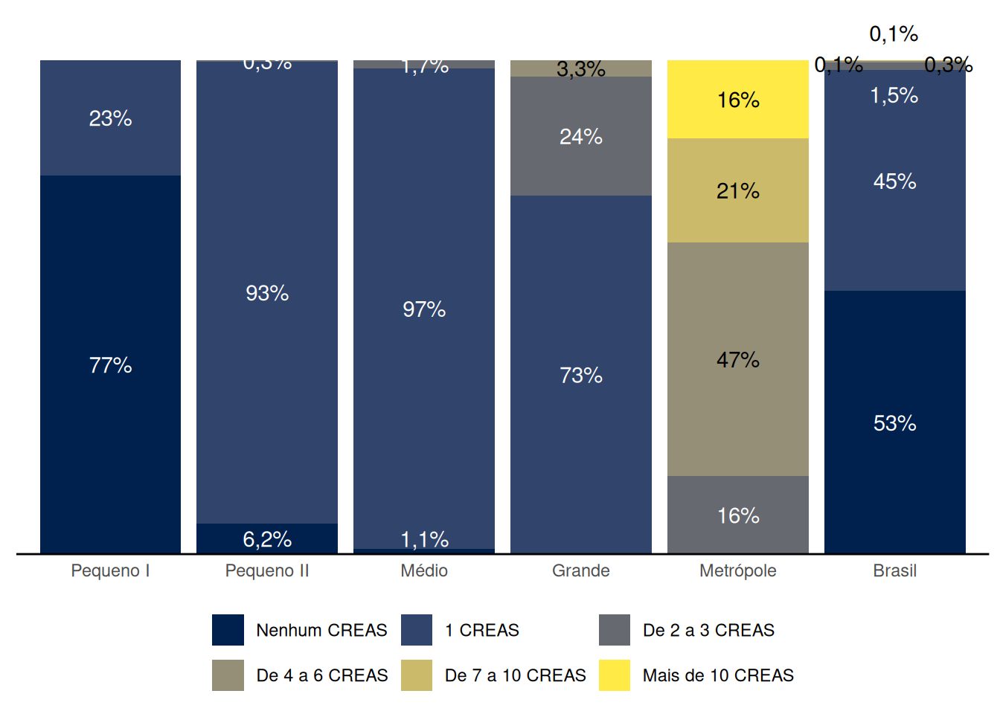
Quanto à situação dos imóveis utilizados nas unidades do CREAS (Gráfico 3.13), observamos que houve um aumento ao longo dos anos no percentual de unidades que funcionam em imóveis próprios, chegando ao percentual máximo da série em 2022, 37%, e recuando 1 ponto percentual em 2023. A maioria dos CREAS funcionam em imóveis alugados, apesar do percentual ter reduzido ao longo dos anos, estando estável em 57% desde 2021. O percentual de CREAS que funcionam em imóveis cedidos é o menor, e oscila em torno de 7% desde 2020.
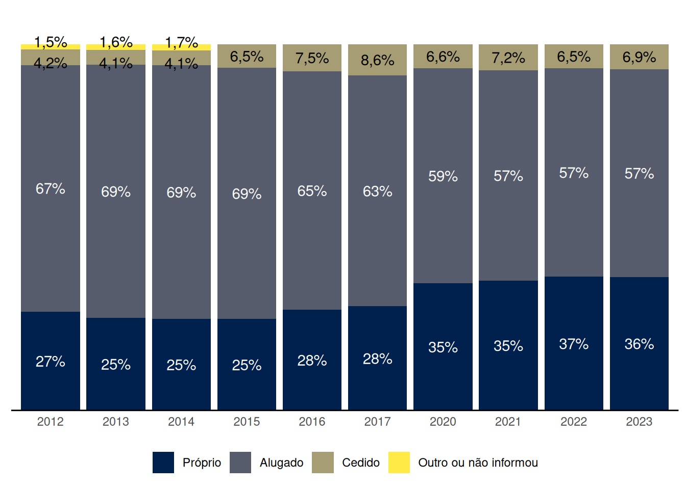
O Gráfico 3.14, sobre as condições de acessibilidade das unidades de CREAS, mostra um aumento em 2023, em relação a 2022, dos percentuais em todos os itens de acessibilidade registrados pelo Censo. Assim como nas unidades de CRAS, a condição de acessibilidade menos presente é o banheiro adaptado para pessoas com deficiência, mas no caso dos CRAS essa condição já está presente em 70% das unidades (Gráfico 3.5), enquanto nos CREAS em apenas 56%.
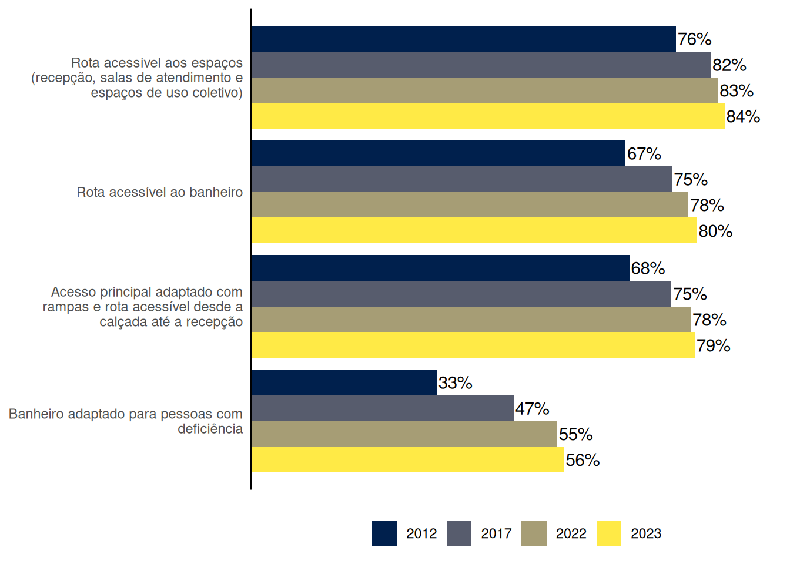
O Gráfico 3.15 mostra a presença de condições de acessibilidade das unidades de CREAS segundo a situação do imóvel, e, assim como no caso dos CRAS (Gráfico 3.6), as unidades que funcionam em unidades próprias apresentam os maiores percentuais de atendimento das condições de acessibilidade, seguido das unidades que funcionam em imóveis cedidos, sendo os menores percentuais de atendimento observados nas unidades que funcionam em imóveis alugados.
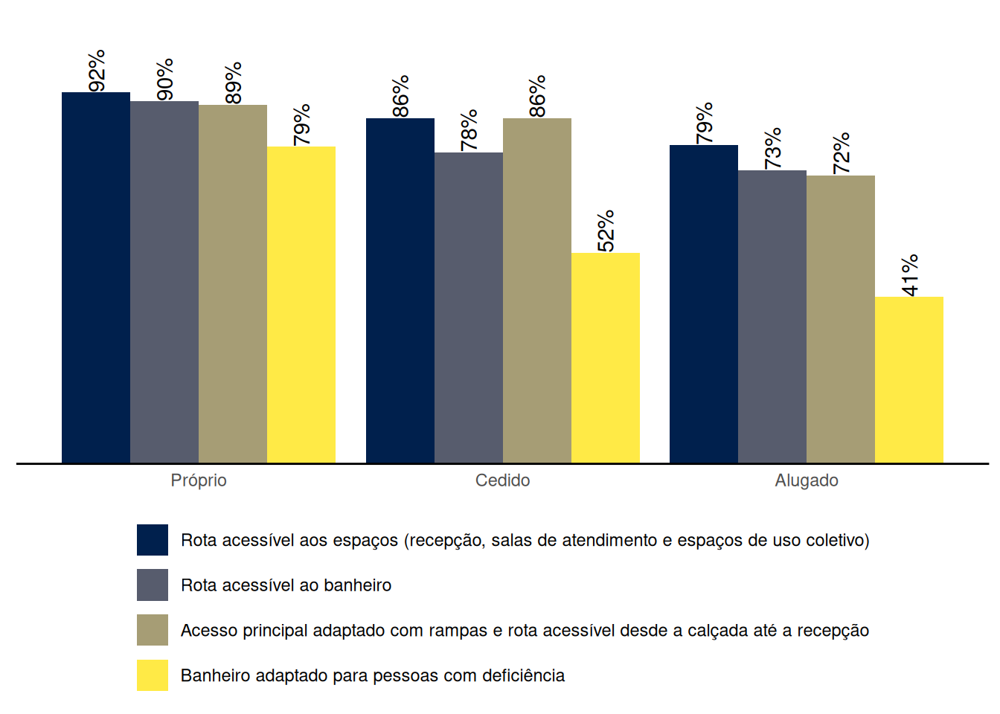
A existência de computadores com acesso à internet é um importante aspecto a ser observado quando se avalia a infraestrutura dos CREAS. Em 2023 o percentual de unidades de CREAS que possuíam computador com acesso à internet avançou meio ponto percentual, de 98,8% em 2022 para 99,3%, com avanços em todas as regiões. Destacamos o avanço na Região Centro-Oeste, que chegou a 100% das unidades de CREAS com computadores com acesso à internet (Gráfico 3.16).
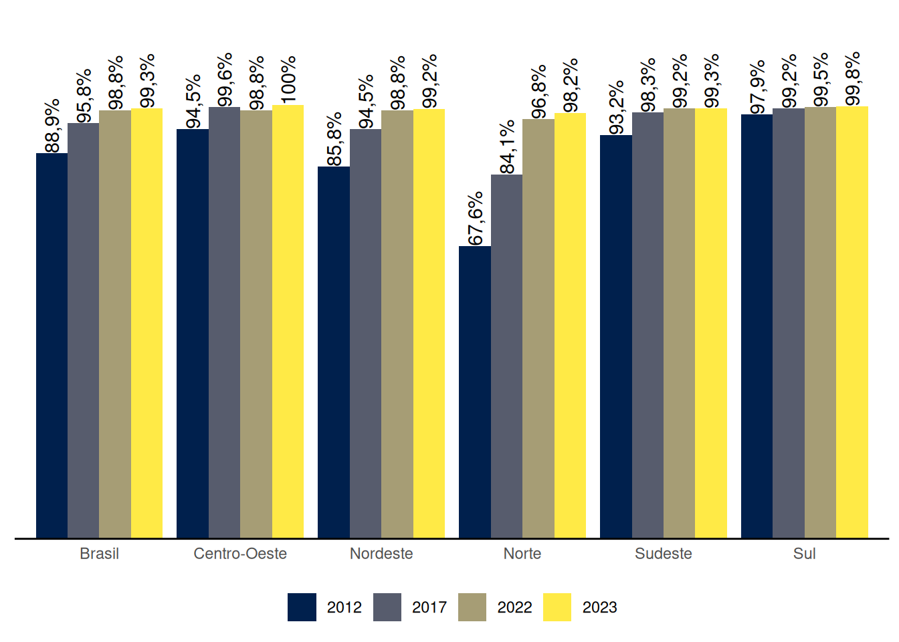
3.4 Centro de Referência Especializado para População em Situação de Rua (Centro POP)
Os Centros de Referência Especializados para População em Situação de Rua, Centros POP, são unidades públicas que oferecem atendimento especializado para a população em situação de rua no âmbito da proteção social especial de média complexidade.
Em 2023 foram registrados no Censo 9 Centros POP a mais em comparação com 2022, indo de 237 para 246 Centros POP no Brasil. Esse aumento foi distribuído nas regiões Nordeste, Sudeste e Sul, sendo que nas regiões Centro-Oeste e Norte o número de Centros POP se manteve o mesmo (Gráfico 3.17).
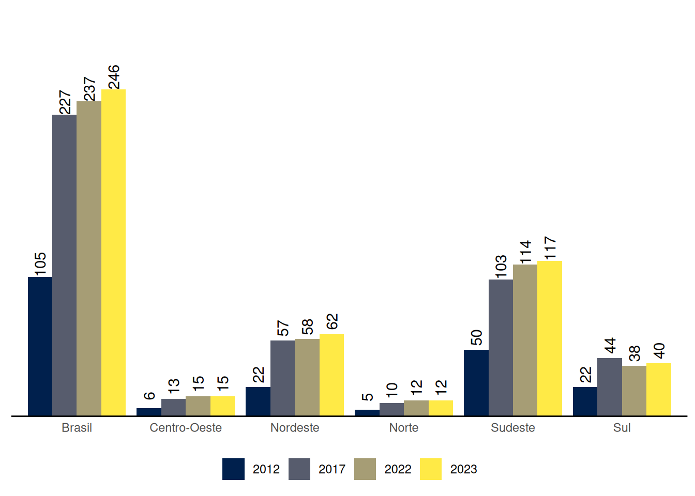
Observamos no Gráfico 3.18 que não existem Centros POP em Municipios de Pequeno Porte I ou II, bem como em 95% dos Municípios de Médio Porte. Mesmo nos Municípios de Grande Porte, ainda vemos que 41% não possuem Centro POP, enquanto quase todos os demais possuem apenas 1 Centro POP. Já nas Metrópoles, a maioria, 53%, possem de 2 a 3 Centros POP, enquanto 32% possuem apenas 1 Centro POP e apenas 16% das Metropoles possuem mais de 3 Centros POP.
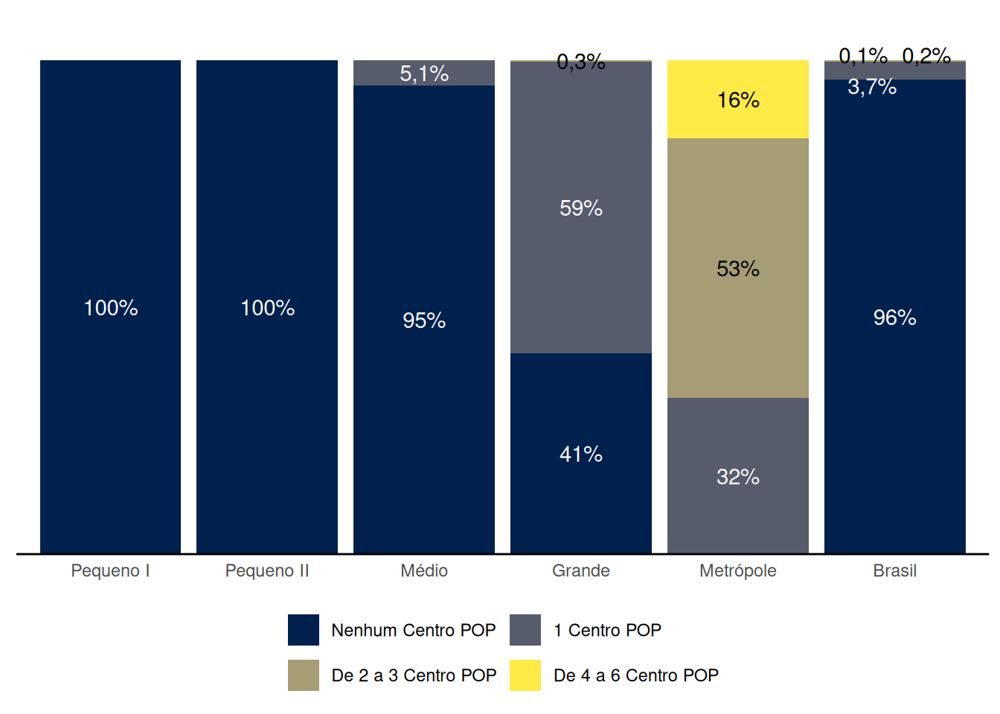
Considerando a acessibilidade segundo a situação do imóvel onde funciona o Centro POP (Gráfico 3.19), assim como observado para as unidades de CRAS (Gráfico 3.6) e para as unidades de CREAS (Gráfico 3.15), nota-se que as unidades instaladas em imóveis próprios apresentam os maiores percentuais de unidades que atendem às condições de acessibilidade, enquanto as unidades que funcionam em imóveis alugados apresentam os piores percentuais.
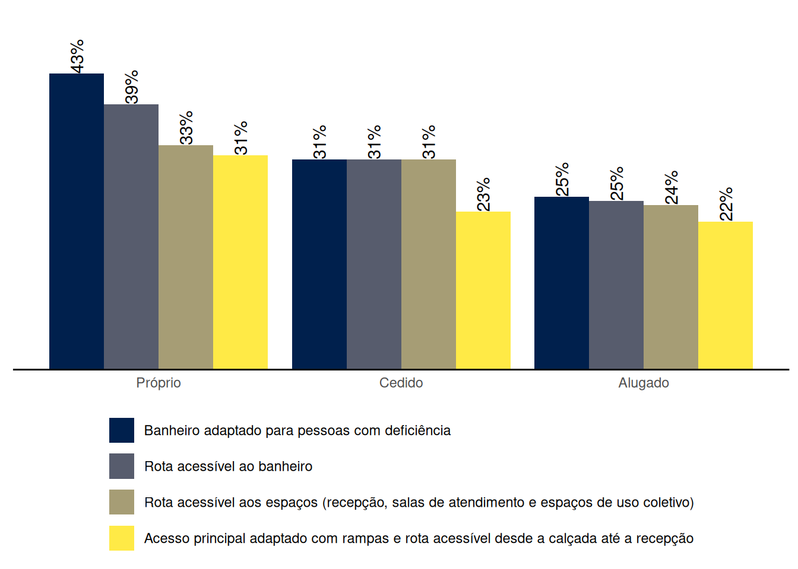
Registra-se no Censo SUAS 2023 o atingimento de 100% dos Centros POP no Brasil com computadores com acesso à internet, conforme mostra o Gráfico 3.20, com as regiões Nordeste, Norte e Sudeste chegando aos 100% que as regiões Centro-Oeste e Sul já tinham atingido.

3.5 Centro-Dia
Os Centros Dia são unidades públicas especializadas para atender pessoas com deficiência e suas famílias. Ela está inserida no âmbito da Proteção Social Especial de Média Complexidade. Em 2023 continuou a expansão gradual do número de Centros-Dia, como pode ser observado no Gráfico 3.21.
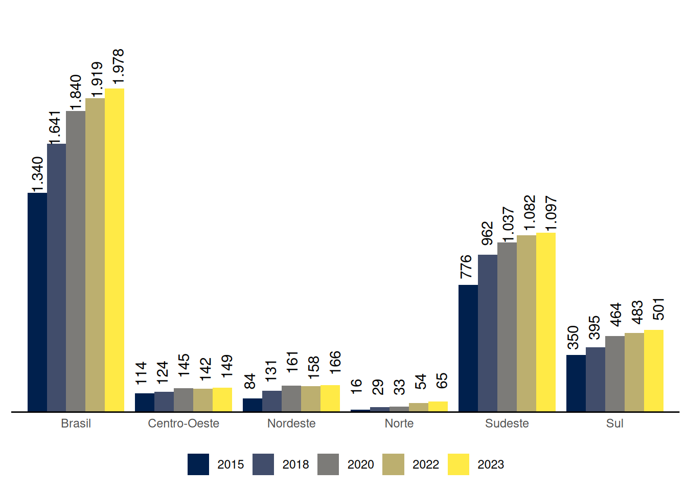
Registra-se no Censo SUAS, desde o início da série histórica, que os Centros-Dia são, majoritariamente (93%), Organizações da Sociedade Civil (OSC), conforme o Gráfico 3.22.
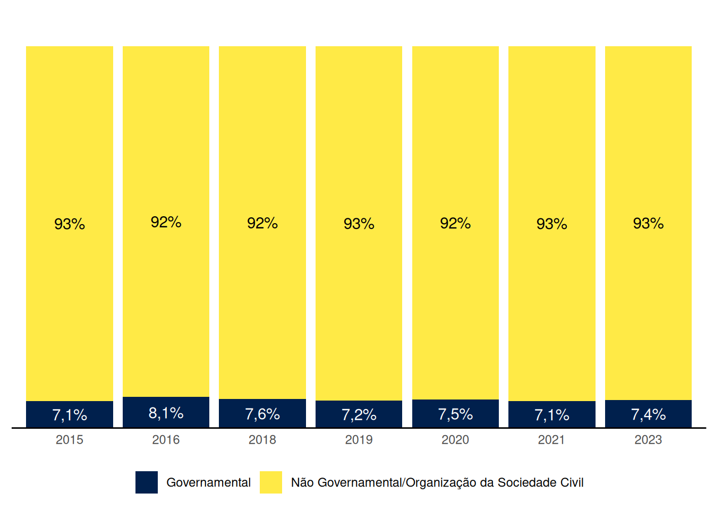
As condições de acessibilidade dos Centro-Dia são uma característica de especial interesse considerando que esse equipamento da Assistência Social é dedicado ao atendimento de pessoas com deficiência. O Gráfico 3.23 mostra que nessas unidades ocorre uma inversão em relação ao que se observa nos CRAS (Gráfico 3.5) e nos CREAS (Gráfico 3.14), pois naqueles equipamentos o banheiro adaptadado para pessoas com deficiência é a condição menos presente, enquanto nos Centro-Dia ela é a condição mais presente. No entanto, apenas esta condição tem percentuais de atendimento melhores nos Centro-Dia, e chama a atenção o fato de que nas outras condições de acessibilidade os percentuais de atendimento nos Centro-Dia são menores do que os percentuais que se observam nos CRAS e nos CREAS.
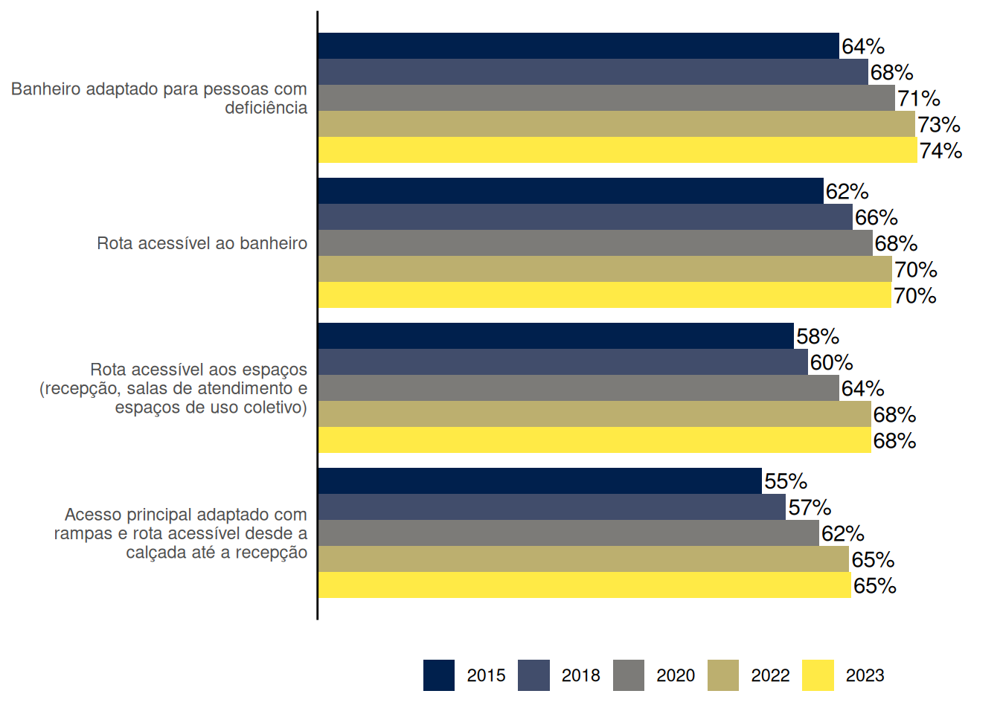
Sobre outras adaptações para pessoas com deficiência, muito importantes nestas unidades dedicadas a elas, vemos no Gráfico 3.24 que algumas adaptações estão se tornando mais presentes, enquanto outras menos.
As adaptações e tecnologias assistivas para deficiência intelectual e autismo são as mais frequentes e o percentual das unidades que as possuem aumentou em 2023 chegando em 32%. Também aumentou o percentual de unidades que possuem adaptações e tecnologias assistivas para deficiência física, chegando a 28% em 2023. Em um patamar bem menor, mas também crescendo, estão as adaptações ou estratégias para assegurar a acessibilidade às pessoas com deficiência auditiva/surdas e pessoas com deficiência visual, cuja presença cresceu em 2023 para 12%.
Já o suporte de profissional com conhecimento em LIBRAS vem caindo e reduziu em 2023 para 22% das unidades. O suporte de material em Braille também vem caindo e reduziu para 12% das unidades.
A existência de pisos especiais com relevos para sinalização voltados para pessoa com deficiência visual vinha crescendo lentamente, mas em 2023 ficou praticamente estável, com pequena queda, permanecendo em 12% das unidades.
Finalmente, o suporte para leitores de telas de computador para pessoas com deficiência visual é a adaptação menos frequente nos Centros-Dia, e em 2023 interrompeu uma tendência de queda, estando agora presente em 9,0% desses equipamentos.
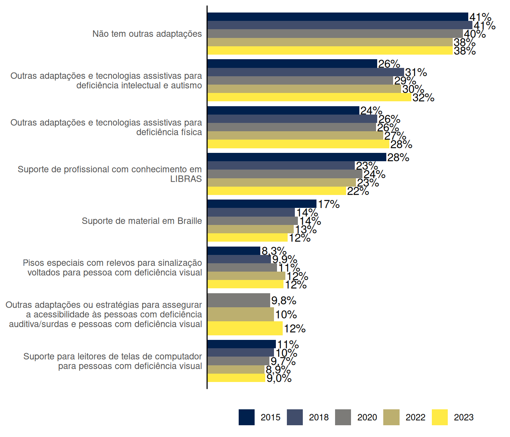
3.6 Unidades de Alta Complexidade
As Unidades de Acolhimento têm o objetivo de ofertar serviços de Proteção Social Especial de Alta Complexidade, com atenção a pessoas e/ou famílias com vínculos rompidos ou fragilizados, ou que estejam em situação de abandono, ameaça ou violação de direitos, de forma a garantir sua proteção integral.
No que se refere à quantidade de Unidades de Acolhimento por porte populacional dos Municípios, observamos no Censo SUAS 2023 que todas as Metrópoles registraram possuir mais de 10 unidades. Por outro lado, observamos que nos Municípios de Pequeno Porte I 75% não possuem nenhuma Unidade de Acolhimento (Gráfico 3.25).
Para os municípios menores, a Resolução CNAS nº31/2013 aprova parâmetros para a oferta regionalizada e a expansão qualificada dos serviços de Alta Complexidade para Crianças e Adolescentes. O Órgão Gestor Estadual é responsável por esta organização.
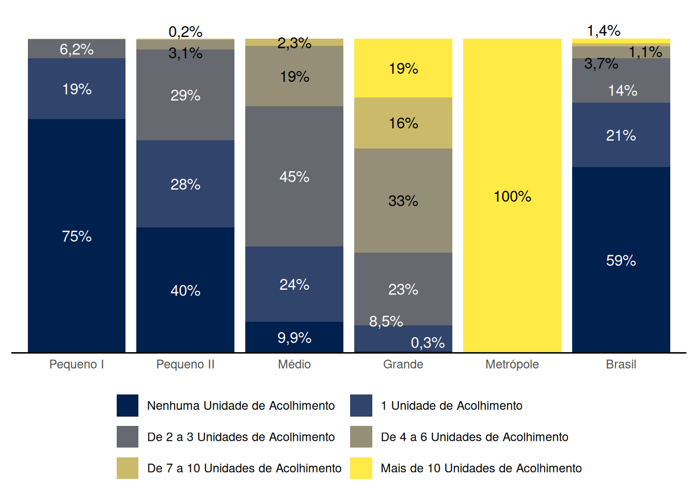
Quanto à natureza das Unidades de Acolhimento registra-se que a maioria são Organizações da Sociedade Cívil (OSC), e os percentuais das que são OSC e das que são Governamentais permanecem relativamente estáveis ao longo dos anos, sendo que em 2023 64% eram Organizações da Sociedade Cívil e 36% eram Governamentais (Gráfico 3.26).
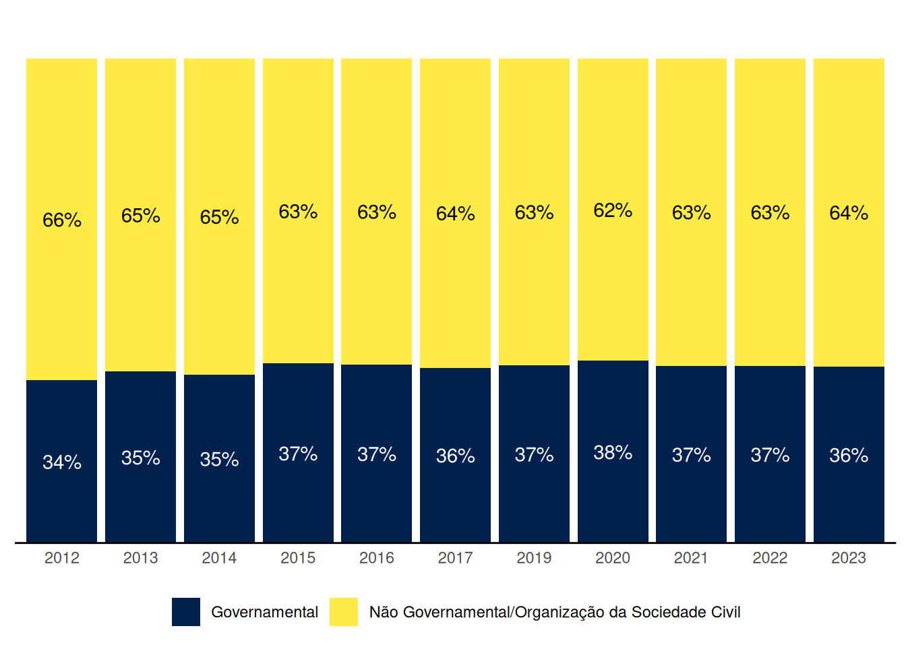
No que se refere às condições de acessibilidade das Unidades de Acolhimento, observa-se em 2023 a continuação do processo de aumento gradual do percentual de unidades que atendem a essas condições, conforme visto no Gráfico 3.27.
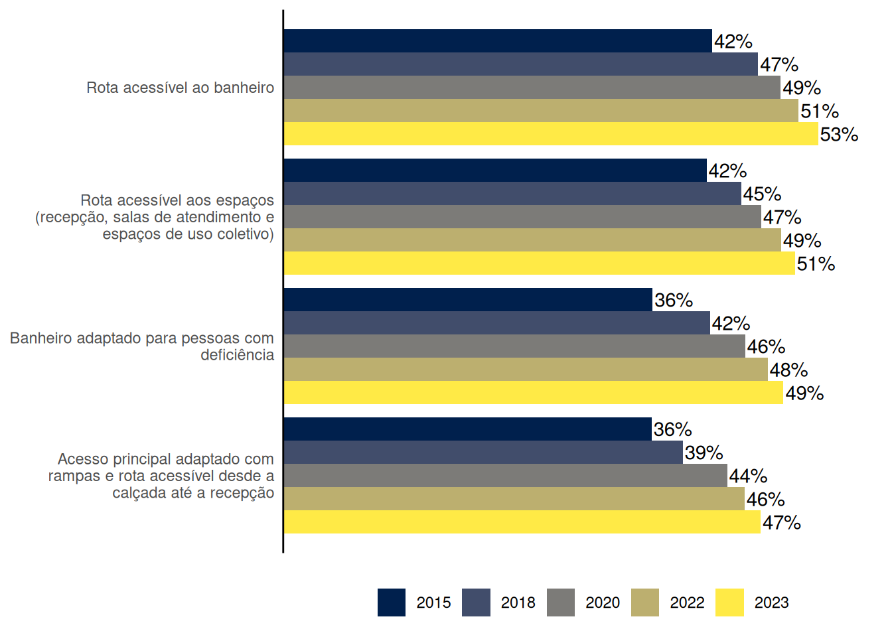
Quanto à existência de computadores com acesso à internet, manteve-se em 2023 o registro da totalidade (100%) das Unidades de Acolhimento tendo este recurso, conforme o Gráfico 3.28.
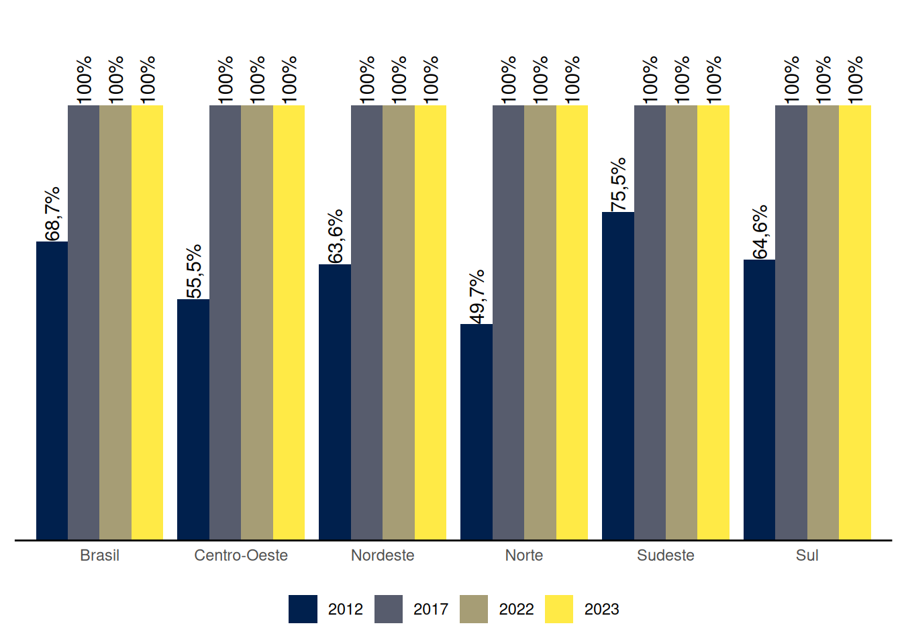
3.7 Unidades do Cadastro Único
A quantidade de Postos exclusivos de Cadastro Único vem crescendo desde o início da série histórica no Censo SUAS em 2020, chegando em 2023 a 3.037 unidades, conforme mostra o Gráfico 3.29.
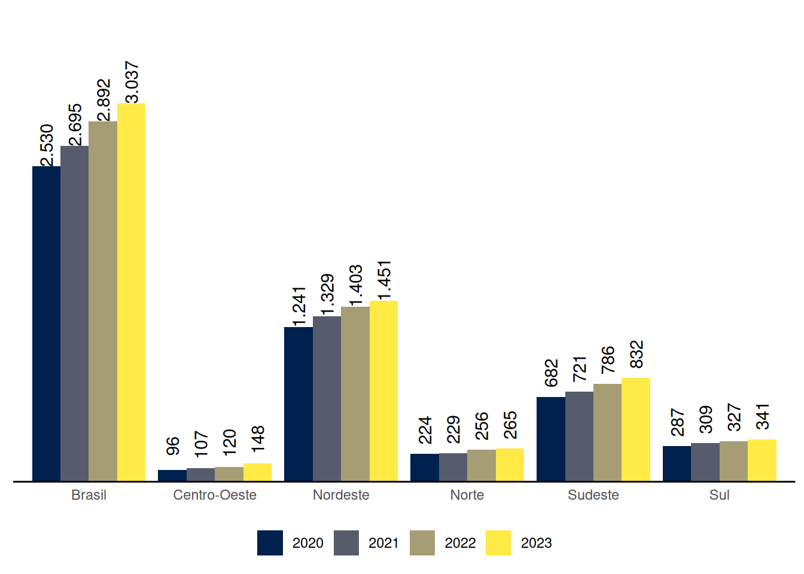
No Gráfico 3.30 vemos que a maioria dos Postos de Cadastro Único funcionam na Sede da Secretaria da Assistência Social ou congênere, mas este percentual vem caindo e chegou em 59% em 2023. Já o percentual de unidades que funcionam em locais que são Postos exclusivos para atendimento do Cadastro Único vem crescendo e chegou em 2023 em 26%.
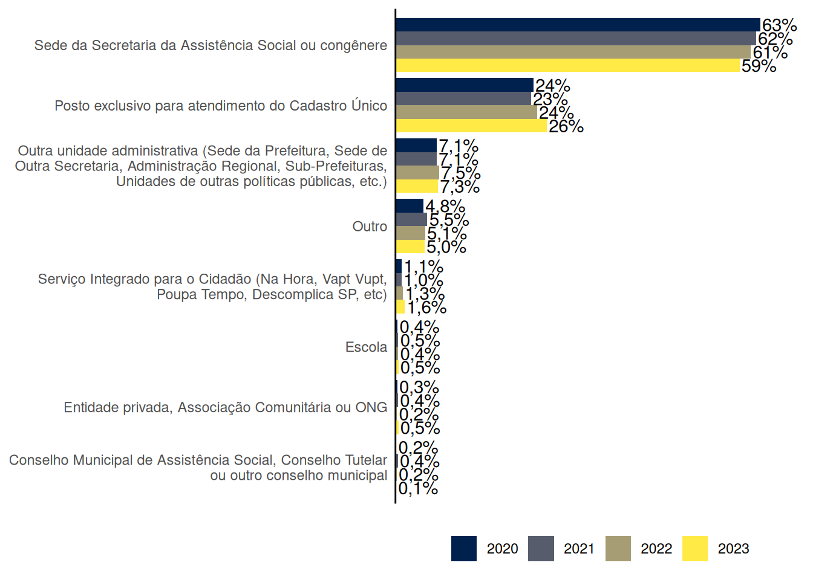
Os percentuais de Postos de Cadastro Único com condições de acessibilidade cresceram em 2023, chegando aos valores máximos desde o início das séries em 2020, conforme o Gráfico 3.31.
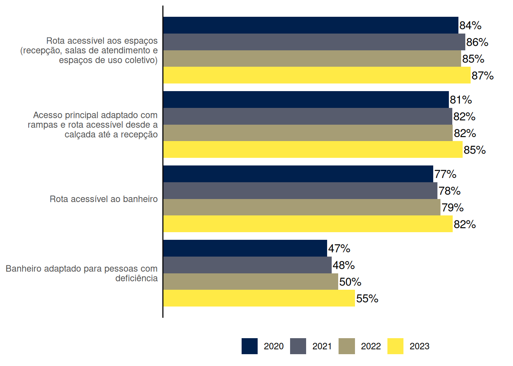
Nas condições de acessibilidade dos Postos de Cadastro Único segundo a situação dos imóveis constata-se a mesma relação observada nos demais equipamentos, ou seja, maiores percentuais de atendimento a condições de acessibilidade nos imóveis próprios e menores percentuais nos imóveis alugados, exceto na condição de rota acessível aos espaços, em que o percentual menor de atendimento é nos imóveis cedidos (Gráfico 3.32).
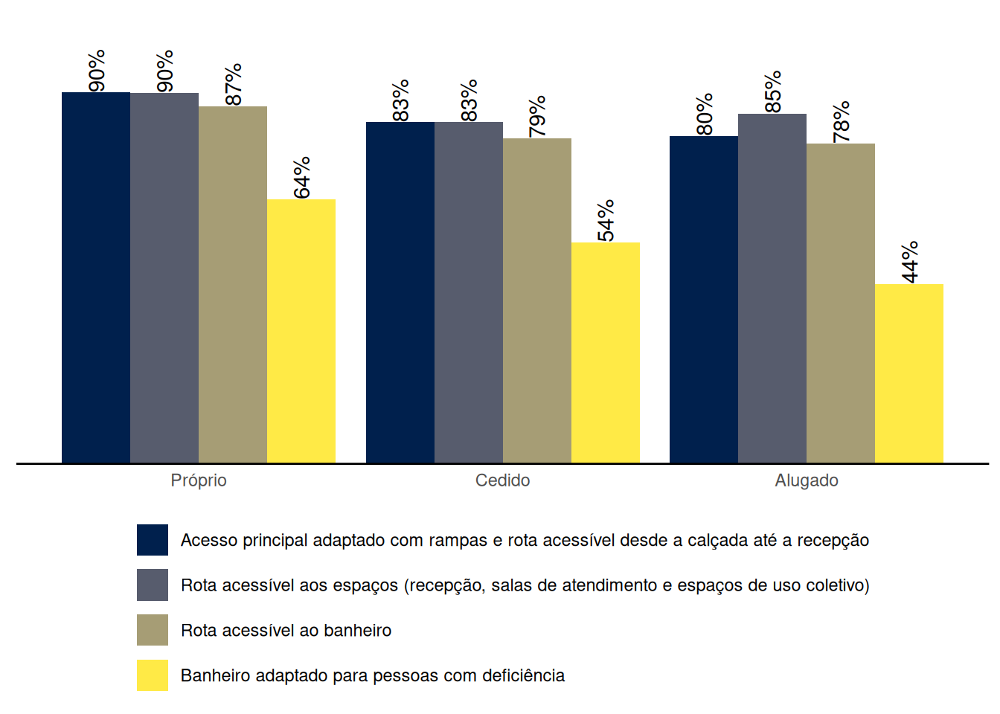
Em relação à existência de computadores com acesso à internet nos Postos de Cadastro Único, verifica-se que em 2023 as regiões Centro-Oeste, Norte e Sul tinham 100% destes postos com esse recurso, e considerando todos os Postos do Brasil o percentual subiu de 99,4% para 99,6% Gráfico 3.33.
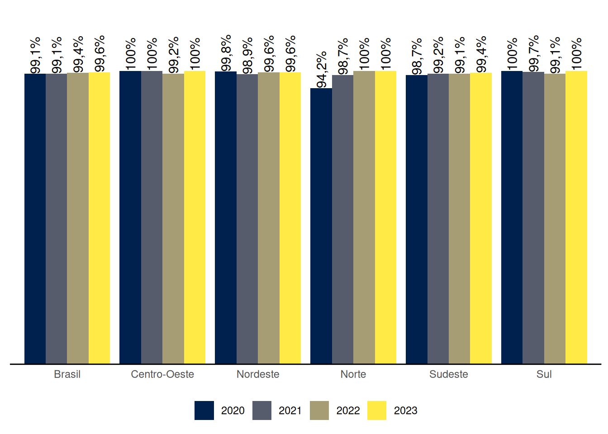